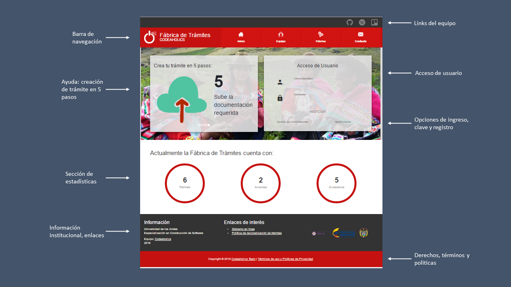

Codeaholics
Fábrica de Trámites
Presentación
Nuestro prototipo

Contexto
La Fábrica de Trámites es una aplicación que permite la creación de múltiples alcaldías, secretarias, funcionarios y trámites para facilitar a los ciudadanos la gestión de sus obligaciones con el Municipio a través de internet. En este sentido, la arquitectura de Software como Servicio SaaS que adopta esta aplicación, permitirá ofrecer un sistema altamente configurable y de fácil mantenimiento.
Contexto